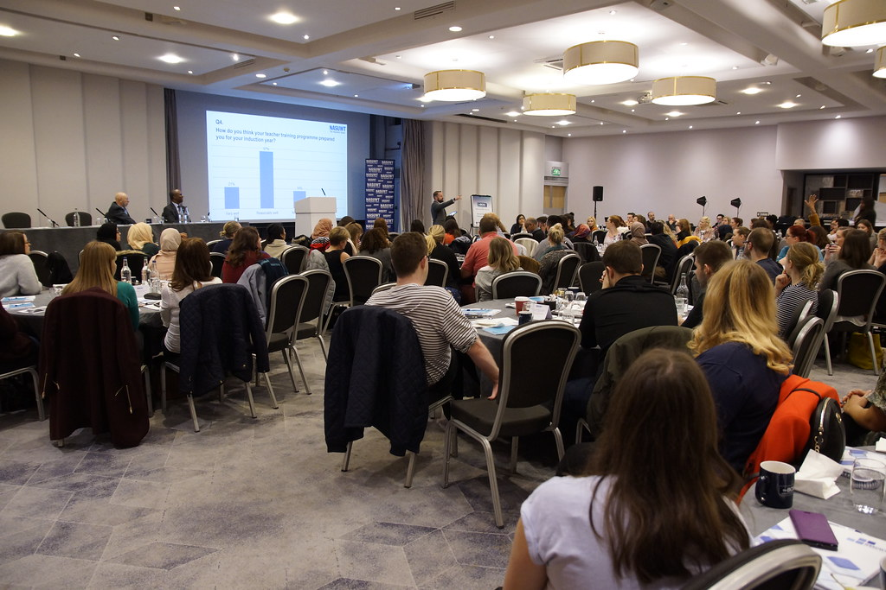

Teachers Portal

The Teachers Portal is a comprehensive web application designed to streamline and enhance the daily tasks of educators. It provides an intuitive interface for managing academic events, schedules, grading, and lesson planning — all in one centralized platform.
Easily create and track important events such as holidays, exams, and special school activities with the interactive calendar. Manage your teaching schedule efficiently by viewing and updating your timetable, ensuring you stay organized throughout the academic year.
The grading section allows for seamless input and management of student grades, helping you maintain accurate records and generate reports effortlessly. Now with our new AI-powered Lesson Plan Generator, you can create complete, detailed lesson plans in seconds — just type a title and let the AI do the work.
With secure login and user-specific data storage, the Teachers Portal ensures your information is safe and personalized to your needs.
Create and track academic events with an interactive calendar system.
Manage your teaching timetable and stay organized throughout the year.
Input and manage student grades with ease and accuracy.
Track student attendance efficiently for all your classes.
Post and manage school announcements for your students.
Generate and view comprehensive academic reports with ease.
Type a lesson title and AI instantly builds a complete, detailed lesson plan for you.
Your data is protected with secure login and personalized storage.

Join us for an engaging and informative Teachers Seminar designed to empower educators with the latest teaching strategies, educational technologies, and collaborative opportunities. This seminar offers a comprehensive agenda featuring expert speakers, interactive workshops, and networking sessions aimed at enhancing professional development and fostering a supportive teaching community. Whether you are a seasoned educator or new to the profession, this seminar provides valuable insights and practical tools to elevate your teaching practice and positively impact student learning outcomes.
Experience the power of collaboration and camaraderie in our Teacher Team Building events. These activities are designed to foster trust, communication, and teamwork among educators, creating a positive and supportive work environment. Through engaging exercises and challenges, teachers develop stronger relationships, enhance problem-solving skills, and build a cohesive community that translates into improved classroom dynamics and student success. Join us to strengthen your professional bonds and contribute to a thriving educational culture.